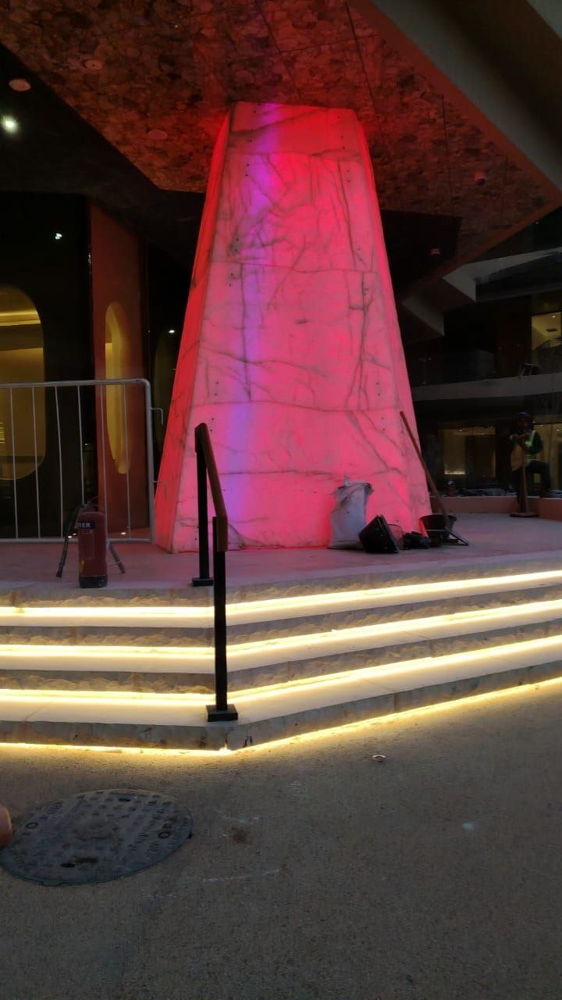
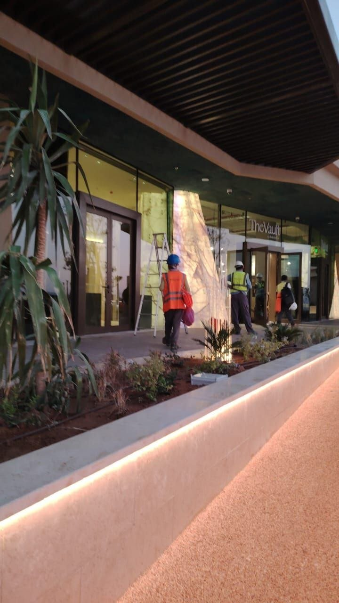

On the ground
I was on-site at Sindalah for the three-week deployment, coordinating with the lighting team and commissioning every building one by one. The construction-phase photos give a sense of what the towers actually look like, glowing through translucent marble, washing illuminated stair treads, internally lit obelisks acting as architectural landmarks.

One of the marble obelisks during commissioning. The colour is dynamic, the same fixture can sweep through any RGB scene the operator selects.

A building entrance at night. The vertical marble pillar is back-lit by an internal fixture; the stair treads are independent strip lighting; both are addressed separately by the same building runtime.

A storefront during commissioning. The warm LED line along the planter edge is one of the dozens of fixture types the system addresses.